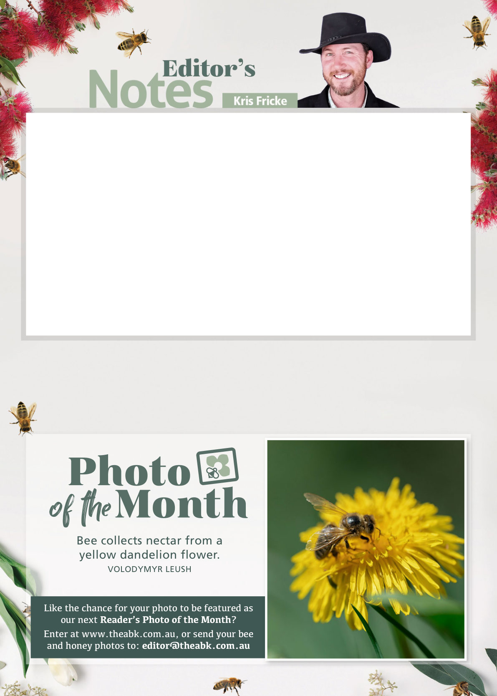

Like the chance for your photo to be featured as
our next Reader’s Photo of the Month?
Enter at www.theabk.com.au, or send your bee
and honey photos to: editor@theabk.com.au
Bee collects nectar from a
yellow dandelion flower.
VOLODYMYR LEUSH
By the time you’re reading this it’s October and the 2025-
2026 beekeeping season is in full swing, with swarm pre-
vention, split making, spring flows and pollination. Also the
spread of varroa across many of Victoria’s commercial bee-
keepers, first detection in South Australia, and New South
Wales having given up on the heat map. It may feel like
our industry is on a precipice, but by and by we will make it
through to brighter times ahead.
In this issue we have articles from several Australian
experts on varroa and honey bee health, including Madlen
Kratz on nutrition, Liz Frost on the particular topic of raising
drones with varroa, and Rod Bourke as is often the case has
some very practical advice on adjusting to the new varroa
reality.
By Christine McDonald we have a very good article about
juvenile hormones. This important hormone regulating
the lifecycle of honey bees works in some more complex
ways than one might imagine so reading this article will give
you important insights into the enigmatic dynamics of the
honey bee life cycle.
Retired NSW Apiary Officer Bruce Ward writes about the
swarm impulse and the various things that can trigger or
mitigate it.
We have two different articles on different types of hives
one is about observation hives, a useful tool for a variety of
purposes, written by Frank Linton who has recently written
an entire book on the subject. The other is on a very novel
idea, horizontal hives with side supers.
Jay Evans, one of the United States’ premier bee research-
ers write about small hive beetles. Randy Oliver writes
about a topic of a great deal of interest to many people
- selective breeding for mite resistance. John Edmonds
as always has a very good seasonal update about how the
season is shaping up.
This is always a feverishly busy time with all the Spring
beekeeping activities so don’t get overwhelmed, remember
to take breaks, and, perhaps, read a magazine.